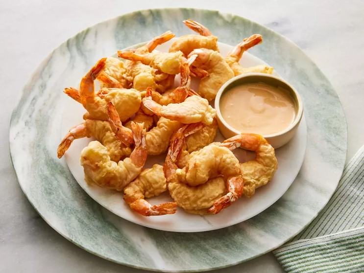

Home
Crispy Shrimp Tempura

Description:
Crispy, Japanese-style tempura shrimp made with homemade tempura batter. Serve them as an appetizer,
main dish, or finger food at your next party.
Ingredients:
- 2 cups vegetable oil for frying
- 1 cup all-purpose flour
- 2 tablespoons cornstarch
- 1 pinch salt
- 1 cup water
- 1 large egg yolk
- 2 large egg whites, lightly beaten
- 1 pound medium shrimp, peeled and deveined, tails left on
Steps:
- Gather all ingredients.
- Heat oil in a deep-fryer to 375 degrees F (190 degrees C).
- Whisk flour, cornstarch, and salt together in a large bowl; make a well in the center.
- Pour water and egg yolk into the well and mix just until moistened; batter will be lumpy. Stir in egg whites.
- Dip one shrimp at a time into batter to coat; do not batter tails.
- When three shrimp have been battered, carefully place them into the deep fryer and fry until golden brown, about 1 1/2 minutes.
- Remove with a slotted spoon and drain on a paper towel-lined plate. Repeat with remaining shrimp,
battering a few at a time while the previous batch is cooking.
note:
This recipe was taken from AllRecipes
Back to Recipes